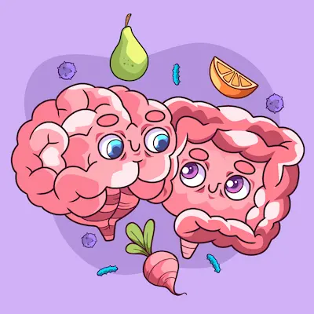

¿Por qué cuesta tanto perder peso? La ciencia lo explica
El Set Point Metabólico: Tu Cerebro Contra Tu Peso Ideal
El cuerpo humano posee sofisticados mecanismos homeostáticos que defienden un rango de peso predeterminado genéticamente, conocido como "set point". Investigaciones en neuroendocrinología revelan que el hipotálamo actúa como un termostato del peso corporal, regulando el gasto energético y el apetito a través de complejas señales hormonales. Cuando inicias una dieta, tu cerebro interpreta la pérdida de grasa como una amenaza a la supervivencia, desencadenando una cascada de adaptaciones: reducción del 15-30% en la tasa metabólica basal (incluso después de finalizar la dieta), aumento del 45% en los niveles de grelina (hormona del hambre) y disminución del 50% en leptina (hormona de la saciedad). Estudios del National Weight Control Registry muestran que estas adaptaciones persisten durante años, explicando por qué el 80% de las personas recuperan el peso perdido en 5 años.
La teoría del gen ahorrador propone que estos mecanismos evolucionaron como ventaja adaptativa durante períodos de escasez de alimentos. Sin embargo, en el ambiente moderno de abundancia calórica, se convierten en obstáculos poderosos. Imágenes por PET muestran que la restricción calórica activa áreas cerebrales relacionadas con la recompensa, aumentando el atractivo de alimentos hipercalóricos en un 300%, mientras que la actividad en las regiones de autocontrol disminuye significativamente. Esta tormenta neuroquímica explica por qué la fuerza de voluntad sola rara vez es suficiente para mantener la pérdida de peso a largo plazo.
Resistencia a la Leptina: Cuando Tu Cuerpo Ignora las Señales de Saciedad
La leptina, producida por los adipocitos, debería indicar al cerebro que hay suficientes reservas energéticas. Sin embargo, en la obesidad se desarrolla resistencia a esta hormona, similar a la resistencia a la insulina en la diabetes. Estudios con ratones knockout para leptina muestran obesidad mórbida, pero en humanos obesos los niveles de leptina son altos mientras el cerebro actúa como si estuvieran bajos. Esta paradoja ocurre porque la leptina tiene dificultad para cruzar la barrera hematoencefálica en estados de inflamación crónica (común en obesidad), y porque los receptores hipotalámicos se vuelven menos sensibles.
La inflamación del hipotálamo, causada por dietas altas en grasas saturadas y azúcares, daña las neuronas POMC (pro-opiomelanocortina) que regulan el gasto energético. Simultáneamente, se hiperactivan las neuronas AgRP (proteína relacionada con agutí) que promueven el hambre. Esta alteración en el balance neuroendocrino puede persistir meses después de iniciar una dieta, creando un estado constante de hambre y bajo gasto energético. Intervenciones como el ayuno intermitente (12-16 horas) y el consumo de ácidos grasos omega-3 han demostrado en estudios reducir la resistencia a la leptina al disminuir la inflamación hipotalámica.
Estrategias para "Reajustar" Tu Metabolismo
Superar la resistencia metabólica requiere un enfoque multifacético que vaya más allá del simple déficit calórico:
- Ciclado Calórico: Alternar días de mayor y menor consumo (ej: 3 días al 80% de gasto energético, 3 días al 120%) confunde los mecanismos de adaptación, manteniendo la tasa metabólica más alta. Estudios muestran un 25% mayor pérdida de grasa versus dietas estándar.
- Entrenamiento de Fuerza Progressivo: Mantener o aumentar la masa muscular contrarresta la caída metabólica. Cada kg de músculo preservado consume ~100 kcal extras diarias en reposo.
- Sueño de Calidad: Dormir < 6 horas reduce la leptina un 20% y aumenta la grelina un 30%. La higiene del sueño es tan crucial como la dieta.
- Manejo del Estrés: El cortisol crónico promueve acumulación de grasa visceral y resistencia a la insulina. Técnicas como mindfulness reducen los atracones emocionales en un 40%.
Superando el Estancamiento: Cuando la Balanza No se Mueve
Las mesetas en la pérdida de peso son inevitables debido a la adaptación metabólica. Estrategias comprobadas incluyen:
- Diet Breaks: Períodos de 1-2 semanas comiendo a mantenimiento (sin déficit) pueden "resetear" los niveles de leptina y tiroides, mejorando la adherencia a largo plazo.
- Cambio de Macronutrientes: Rotar entre dietas bajas en carbohidratos y bajas en grasas cada 4-6 semanas evita la adaptación de las enzimas lipolíticas.
- Termogénesis por Actividad No Ejercicio (NEAT): Pequeños aumentos en movimiento diario (pararse cada 30 minutos, caminar mientras se habla por teléfono) pueden compensar hasta 500 kcal/día de la reducción metabólica.
- Paciencia Realista: El cuerpo no pierde grasa linealmente. Monitorizar medidas corporales y composición (no solo peso) es clave para mantener la motivación durante los estancamientos.